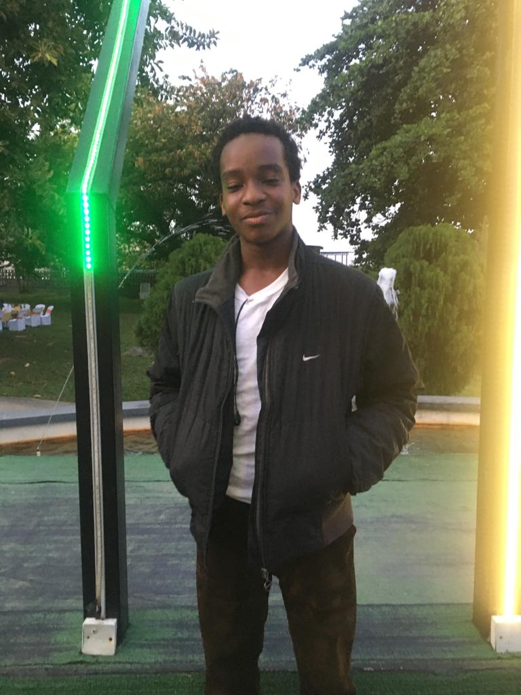

I'll keep this short.... My 2022 was 🤔... something I guess ✍️. I have done a lot of things this year (Not really that much), however, i have no real Achievements this year ✍️✍️✍️
Let's Review
- I HAVE RESEARCHED SEVERAL TOPICS; BLACK HOLES, NEUTRON STARS, VIRTUAL REALITY, HUMAN CLONING, QUANTUM PHYSICS, MULTIVERSE CONCEPT, PSYCHOLOGY BEHIND LOVE, BRAIN WAVES, BIG BANG THEORY AMONG OTHERS. AND YET, MY THEORY (HYPOTHESIS) ON GRAVITATIONAL TRANSFER IS FAR FROM COMPLETE. IN ADDITION, I HAVE NO CONCLUSIVE THEORY ON THE WORKING PRINCIPLE OF A FULL DIVE V.R DEVICE (I HAVE A FEW IDEAS🥴 BUT I CAN'T EXACTLY SAY THEY'LL WORK 😑). AND NOW I HEARD ELON MUSK IS RELEASING A NERVEGEAR IN 2023✍️
- I HAVE WATCHED 100+ ANIMES THIS YEAR, AND YET MY STORIES TEND TO BE INCOMPLETE... IT HAS A GENERAL IDEA, PACING,ETC. BUT NOTHING TO FILL THE GAPS✍️
- I HAVE PICKED UP A NUMBER OF SKILLS THIS YEAR (SM BOOSTING, PAYPAL ACCT CREATION,WEB(INCOMPLETE), PYTHON (INCOMPLETE), FOREX TRADING,ETC) AND IMPROVED A LITTLE ON OLD SKILLS (VIDEO EDITING, GRAPHIC DESIGN, PHOTO EDITING).. AND YET, I HAVEN'T PUT ANY OF THOSE SKILLS TO USE. IN ADDITION,MY YT IS FAR FROM 1000 AND I LOST INTEREST/INSPIRATION IN GRAPHIC DESIGN AND PHOTO EDITING ✍️
- I EXPERIMENTED ON BUSINESS AND MARKETING, HOWEVER, I HAVEN'T MADE ANY MILLIONS✍️
- I ALSO TRIED/EXPERIMENTED ON INVESTMENT OPPORTUNITIES, SMART CONTRACTS, CRYPTO MINING AND THE LIKES.. HOWEVER, LIKE THE ONE ABOVE, I HAVEN'T MADE ANY MILLION✍️
- I READ THE CONCEPTS/PROLOGUE (IN A WAY) FOR CYBERSECUIRITY AND SOLIDITY... BUT I'M YET TO LEARN THEM TALKLESS OF APPLYING THEM✍️
- I MET A LOT OF NEW PEOPLE THIS YEAR... BUT I'M STILL ENDING THE YEAR SINGLE 😅(You can't be serious 24/7😂)
- I STARTED PLAYING CALL OF DUTY AND REACHED GRANDMASTER 3 IN MY FIRST SEASON... HOWEVER, I'M YET TO REACH LEGENDARY😅(AS PER MY NAME🌚👻)
- I STARTED EXERCISING, NO 6 PACKS YET✍️😂😂😂
Any other thing I've done this year not in the above list, i either forgot or didn't feel free sharing ✍️
MY RESOLUTIONS FOR 2023 ARE SIMPLE
- BE BETTER THAN IN 2022
- ACHIEVE
- DO MORE
 SIGNED: LEGENDARY4K